Overall, my work for this assignment focused on mesh representations and techniques for modifying them. Starting with de Casteljau's algorithm as a means to represent smooth curves and surfaces, the first 3 parts focused on techniques for representing abstract mesh data on the screen. Part 3 introduced the halfedge data type as well as shading techniques, and was probably my favorite part of the assignment to work with. I've used Blender for some hobby projects over the years, and the smooth shading option always impressed me with how little geometry it needed to make surfaces that appear smooth. Finally getting to 'look behind the curtain' was a lot of fun, and I particularly appreciated how elegant the halfedge data type was. Compared to dealing with the triangle-index representation in game engines, working with halfedges traversals felt much easier.
The later 3 parts of the assignment primarily felt like good practice for testing how well I understood the halfedge representation. These parts involved implementing flipping, splitting, and subdivision operations using the halfedge representation. For each of these problems, I started with a planning phase to carefully plot out an implementation before writing any code. This phase generally consisted of defining elements with clear names and working out a mapping between them to accomplish the specified operation. This careful planning paid off, though it made the coding feel very repetitive for parts 4 and 5, as these mostly consisted of writing out the relation updates I'd already planned out. Of this section, the subdivision operation in part 6 was my favorite, as having to figure out the necessary traversals provided an interesting challenge.
One way to evaluate Bezier curves is de Casteljau's algorithm.
This algorithm works by recursively interpolating a set of control points until only one point remains.
At each step, we treat each pair of consecutive control points as a line, and produce a new point by linearly interpolating between the line's start and end according to some factor, t.
The next call is then run on the set of new points produced by this step.
Thus, at the end of each iteration, we have 1 less than the number of points we started with, which means the algorithm eventually yields a single point.
Said final point lies on the curve, giving us a sample of the bezier curve for the value of t.
Actually implementing de Casteljau's algorithm as a program is fairly straightforward. First, we define a step function, which loops over a list of points and returns a new list of interpolated points, according to the above instructions. Then, we repeatedly call this function, feeding the output of the last iteration into the input of the next iteration, until it returns a list of only 1 point. This is our curve point, so we're done. You can see the results below, where the white points are the initial control points, and the blue points are the interpolated points:
|
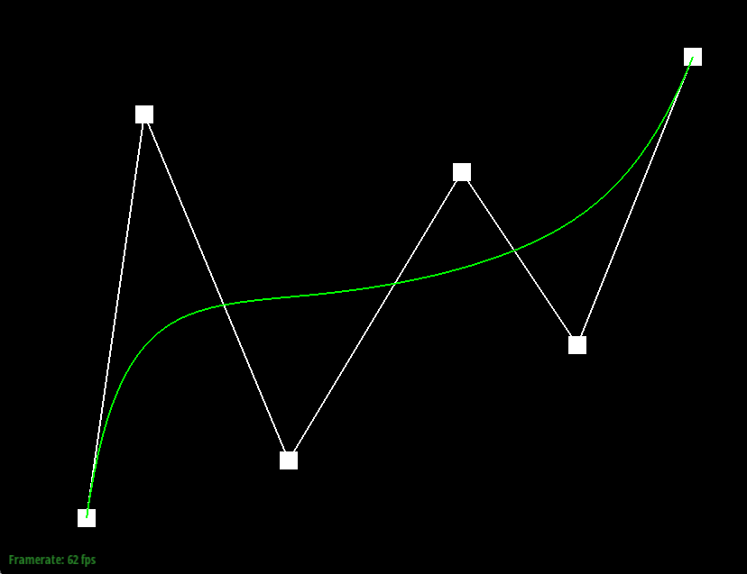 |
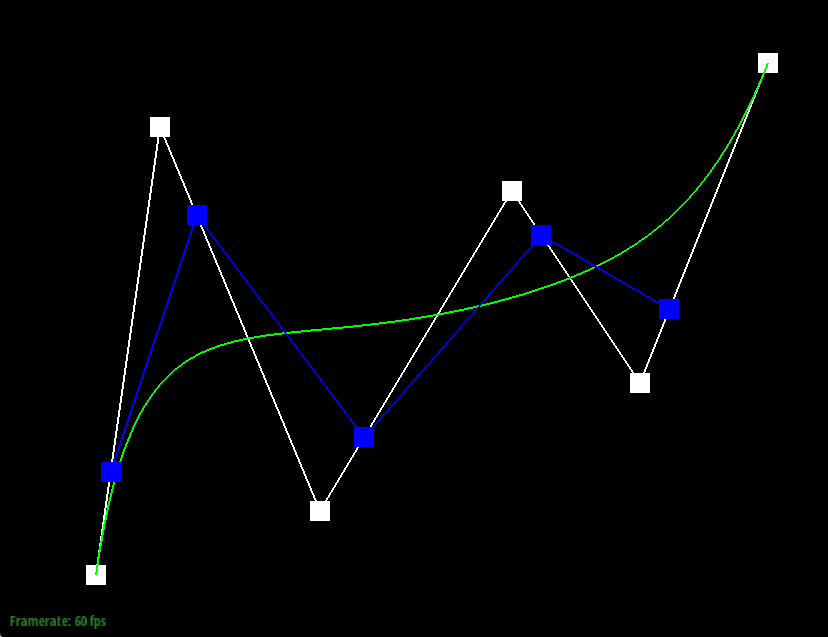 |
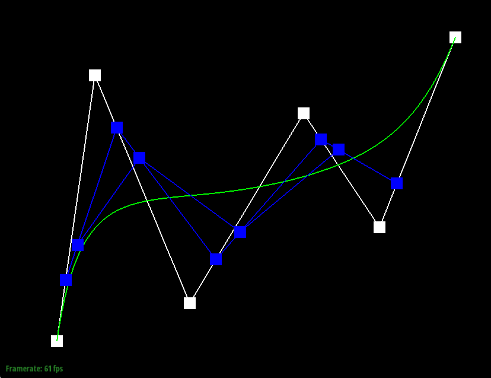 |
|
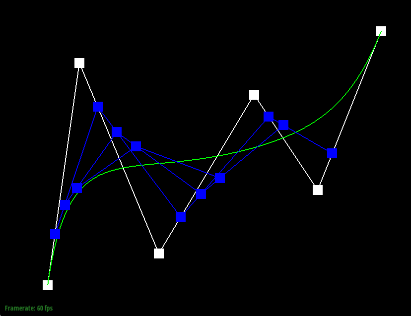 |
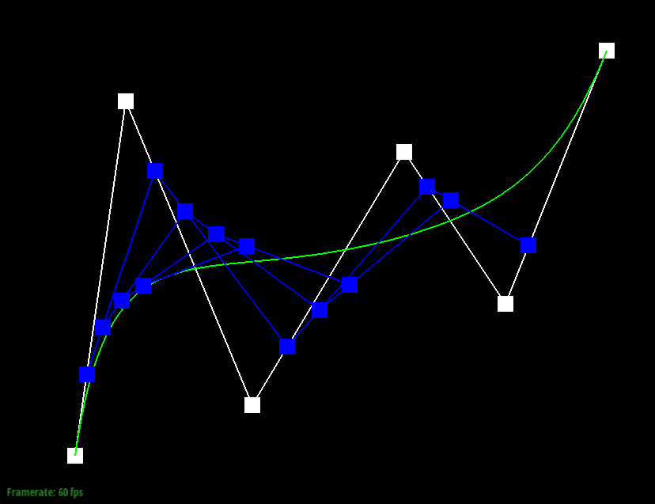 |
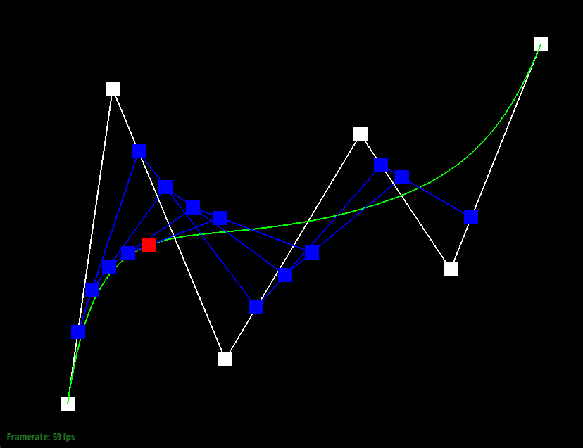 |
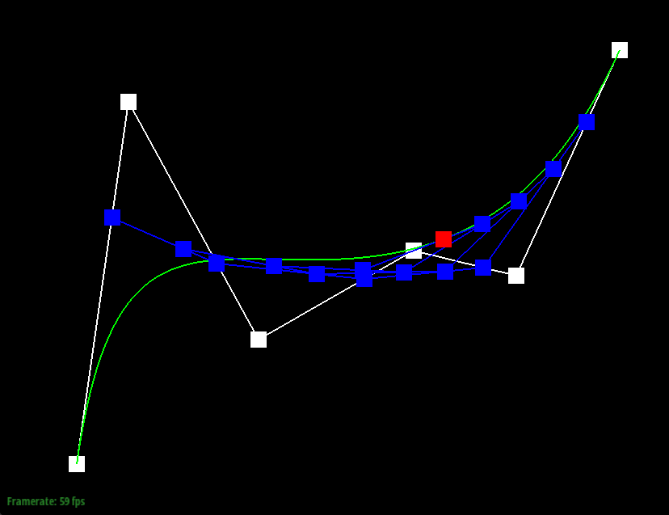
Before covering the implementation, I should clarify that choosing a point to sample on the surface consists of choosing a pair of u,v interpolation parameters, one for each axis.
For the surface implementation, I began by defining a function that samples a bezier curve, defined by a vector of control points, and an interpolation parameter.
The implementation for this function can be found in Part 1.
Next, I defined another function that, given a grid of control points and 2 interpolation paramters, samples a point along the Bezier surface of the given points.
For this function, I begin by iterating over the rows of the grid, passing each to the first function along with the first interpolation parameter.
The resultant points are cached during this iteration.
Once the iteration is complete, I use the output points to run the first function along the opposite axis, using the second interpolation parameter.
This yields a point along the surface, completing the implementation.
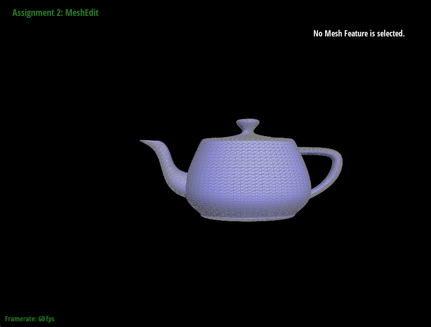
next() on the twin of the current outgoing halfedge.
For each step of the iteration, I preemptively calculate the next edge in the traversal, and pair it with the current edge to define a neighboring triangle.
Then, I add the area of this face to the running total, and add it normal multiplied by its area to the normal vector counter.
The normal is calculated using the unit() of the cross product of the two vectors.
This repeats until all neighboring faces have been visited.
Once the iteration is complete, the counters provide the total area of the neighboring triangles, and a sum of all their normal-area product vectors.
Dividing the total normal by the total area yields an average normal of the surrounding faces, weighted by their individual areas.
While that mostly wraps up the implementation, I do have a few other notes. Firstly, calculating the triangle area was trickier than I thought it would be. I ended up using the \(0.5 * b * h\) formula by choosing one of the vectors to represent the base. Then, I removed the projection of the other vector onto this base from the vector itself, and used its magnitude as the height. I think there might be a better way involving the cross product, though I don't exactly remember all of its properties off the top of my head. However, this seemed good enough, if a somewhat simplistic. Secondly, just to be safe, I also take the
unit() of the normal before returning.
While testing showed that the magnitude of the result was always very close to 1, it often deviated a little bit due to floating point errors, so re-normalizing here is useful to prevent any unexpected bugs.
I didn't notice any visual differences before/after the change, so this might be excessively cautious.
|
|
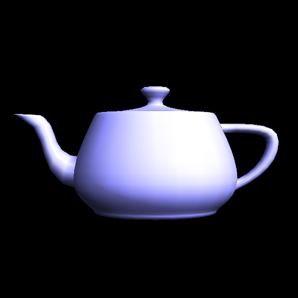 |
To implement the edge flip operation, I began by carefully plotting out which elements of the 'before' mesh would correspond to those of the 'after' mesh. While I initially did this with pen and paper, I've included a cleaned up diagram to convey the mapping I used:
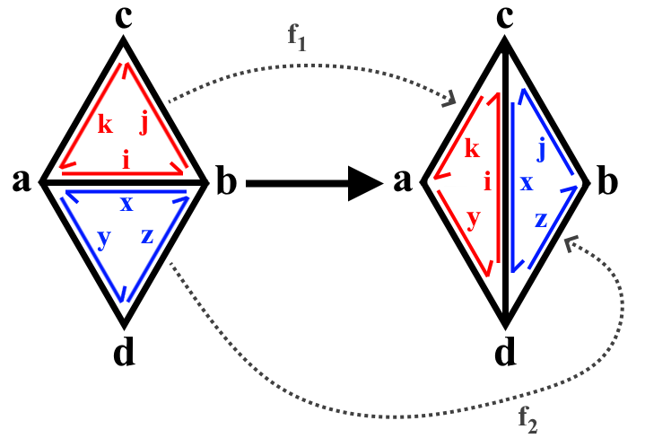
With this diagram in hand, and a list of the fields contained in each data type, I traced out what relations would need to be updated.
I started with the halfedges, treating 'i' as the given edge and defining every other halfedge in terms of next and twin operations on 'i'.
With the halfedges defined, I was then able to pick which halfedges I would assign to the vertices, edges, and faces after applying the operation, completing the mapping.
Once I had double checked everything, implementing the operation as code was actually quite straightforward.
Essentially, we just define variables for each element in the mapping, then apply the depicted relationships to the halfedges.
Once the halfedges are done, we update the halfedge references in each face, as well as those of the vertices.
The exact halfedge assignments for the faces and vertices can be chosen arbitrarily, so long as they fit the given specifications.
Note that, with the above mapping, we don't actually have to update the edges, thus, we're done at this point.
For this operation, I specifically wanted to avoid the setNeighbors() function, since I felt the above plan was complete enough to produce a cleaner set of individual field updates.
Thankfully, this turned out to be true, and there was little to no debugging for this part.
|
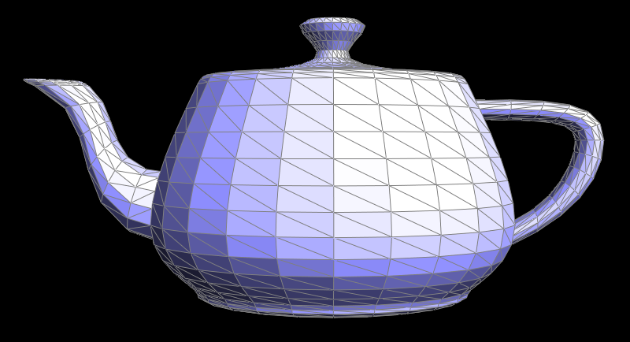 |
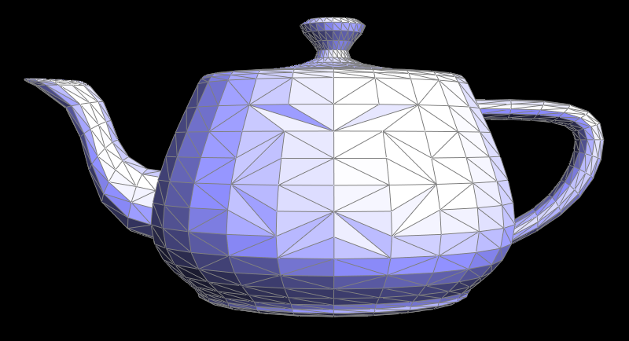 |
Solving this part followed a process quite similar to that of Part 4.
However, having to create new elements added some complexity, and lead me to go with an approach that simply applies setNeighbors() to every element, thus ensuring no update is missed.
First, I began with a mapping, as in Part 4.
Though, this time I labeled the before and after halfedges with completely different schemes, only later going back to establish which elements were equivalent.
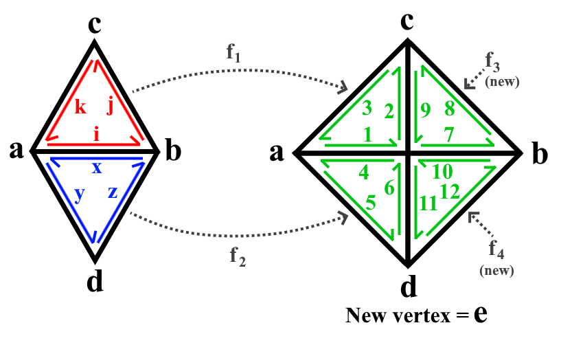
Once I made the diagram, I established which elements would be equivalent in the mapping, to minimize the number of new elements I'd have to create.
First, for the halfedges, I opted to let 'i' be the halfedge of the given edge again.
Then, I made the following mappings:
\[ i=1,x=4,k=3,y=5,j=8,z=12, f_1=f_1, f_2=f_2\]
With these mappings, I was done with the planning phase.
For the actual implementation, we again started by defining variables for every depicted element, using next and twin to move according to relative element relationships.
Here, we have to create new halfedges for \(2,6,7,9,10,11\), since they have no equivalent.
Additionally, vertex \(e\) must be created at this point.
We calculate its position using a linear interpolation between \(a\) and \(b\), with \(t=0.5\)
Next, we apply the mapping, updating the halfedges and their relations to match the the diagram.
This was the most tedious step, as it involved carefully writing out the inputs to many setNeighbors() calls.
Though, having the diagram allowed me to avoid any critical mistakes.
Thankfully, with the halfedge relations updated, we only have to update the remaining vertices, edges, and faces. First, we need 3 new edges, for the edges within the initial 2 triangles. To be safe, I opted to reassign all the edges an appropriate halfedge from \([1,12]\), though a better implementation could proably avoid some reassignments along the outside edges. Since we've already created and positioned \(e\), all we have to do for the vertices is pick an outgoing halfedge for each one, and update their fields. Finally, there's the faces, for which we can pick any of their 3 'internal' halfedges.
Again, thanks to the careful planning, I didn't really have to do any debugging, and the operation seems to work perfectly. Though, I did not handle the boundary edges case, which presents some room for improvement.
|
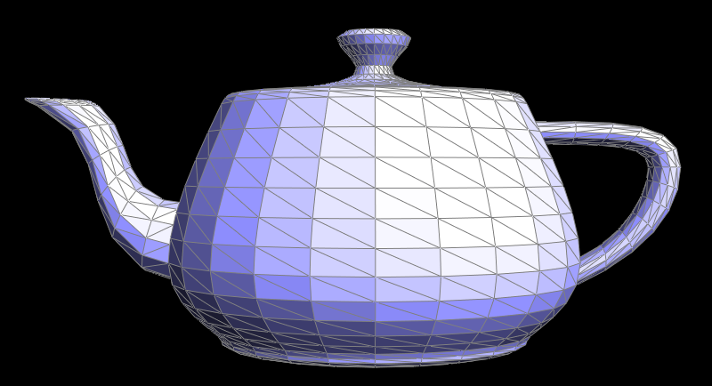 |
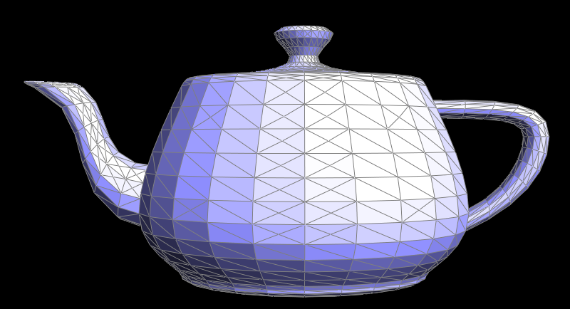 |
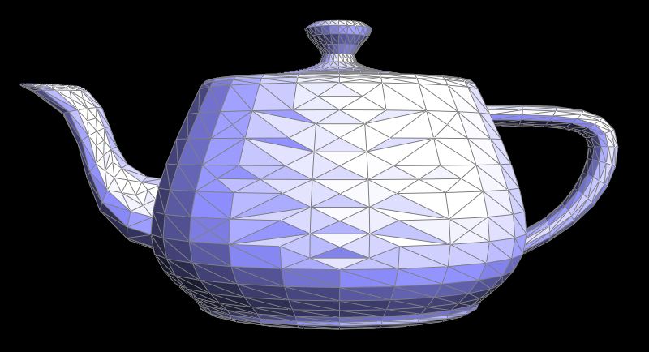 |
For this part, I followed the recommended steps to implement the subdivision operation.
I began by calculating the new positions for each of the existing vertices.
This was done by nesting the neighbor iteration from part 3 in a simple loop over all the mesh's vertices.
Though, instead of the weighted normal calculation, the inner iteration calculates the weighted position contribution of each neighbor and adds it to a total, which is then assigned to the vertex's newPosition.
Next, the new vertex positions are calculated by iterating over the current edges.
This calculation follows the provided \([1/8,3/8,3/8,1/8]\) weighting of the surrounding vertex positions, and is saved to the newPosition of the edge.
The third step is to split the edges.
This was the most challenging step, as I had to figure out how not to iterate over any new edges.
In the end, I opted to use a for loop to increment the mesh.edgesBegin() iterator a number of times equal to the number of edges present before starting the loop.
Since all new edges are added to the end of the list edge list, this ensures that we traverse exactly the set of 'old' edges.
However, edge iteration was not the only challenge caused by this step.
The second issue was marking which edges should be new or old.
While the split produces 4 'internal' edges between the two initial triangles, two of them should be marked as 'old', and the other two should be 'new'.
I decided to implement this by first caching the two vertices of the edge being split.
Then, after the split, I iterated over the neighboring edges of the new vertex, marking any that landed on the cached vertices as 'old', and any that didn't, as 'new'.
Also, during the outer edge iteration, I update the position of new vertices using the saved newPosition of the edge.
Having already setup the newPosition and isNew fields, the remaining steps were straightforward.
I simply flip any 'new' edge that lays between old and new vertices with a basic edge iteration.
Then, I update the position of any old vertices with another basic iteration over the mesh's vertices.
|
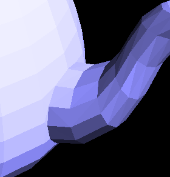 |
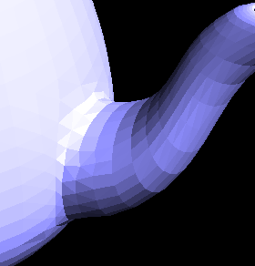 |
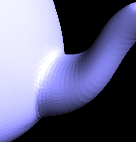 |
From the above images, we can clearly see that sharp edges are quickly smoothed by the subdivision operation, even when we may not want this to happen. With other models, such as a basic cube, this becomes apparent even faster. Below, I've demonstrated one way to preserve a sharp edge by pre-splitting surrounding edges:
|
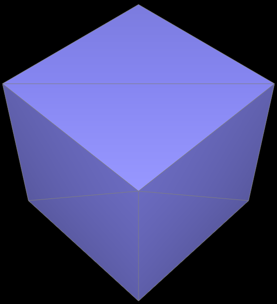 |
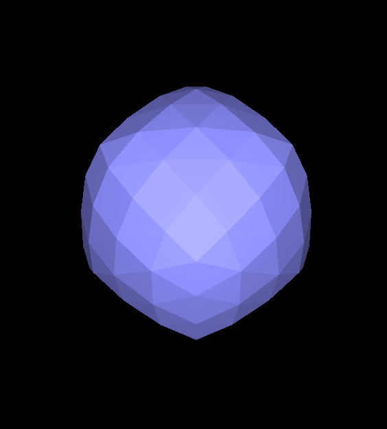 |
|
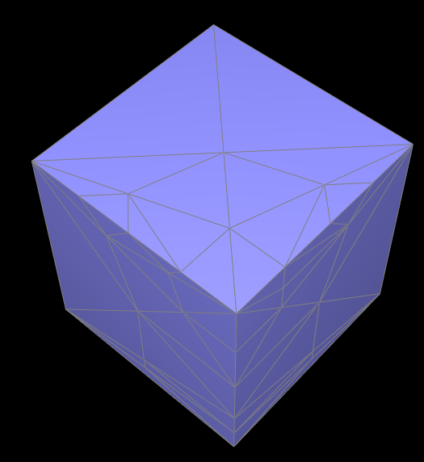 |
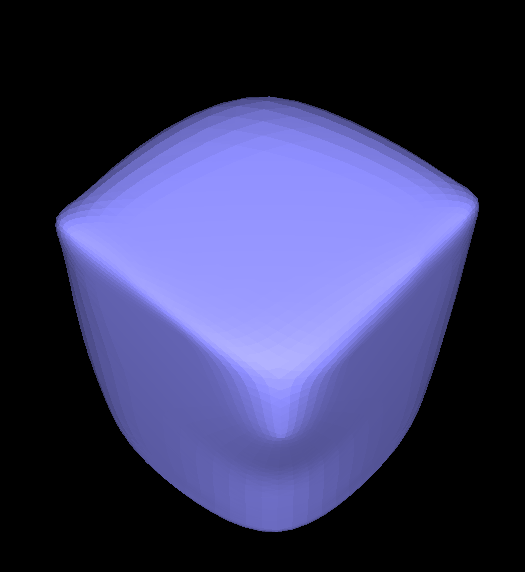 |
By carefully splitting and flipping edges, we can create many smaller faces around sharp corners without changing the actual surface. Having all of these small faces surround the edge means the weighted average of the subdivision will draw from vertices with a position similar to those of the edge itself, rather than those on the opposite side of the cube. Thus, the edge remains sharper, even at higher subdivision levels. This can be clearly seen in the above images, where the front, top edges of the cube remain sharp, while the others get smoothed out.
Another thing to note is the asymmetry of the smoothing on the cube. This is because the cube's vertices have different degrees, and share edges with neighbors at different distances. A vertex with a high degree of far away neighbors will be quickly smoothed, while one with fewer, closer neighbors will be smoothed less rapidly. This effect is a direct result of the averaging algorithm used, and can be avoided by making the vertex degrees and neighbor spacing symmetrical, as seen below:
|
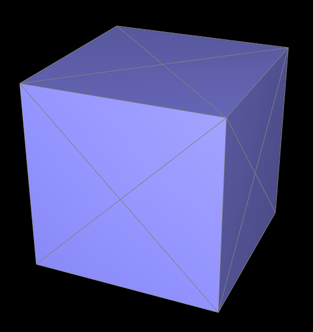 |
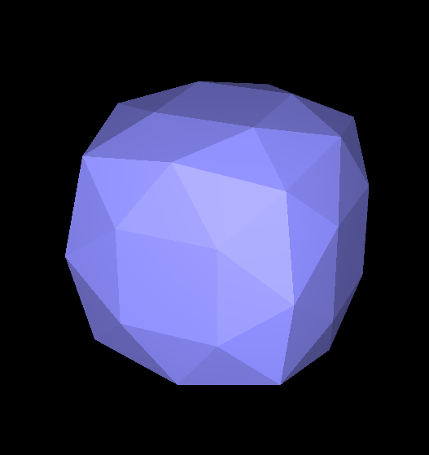 |
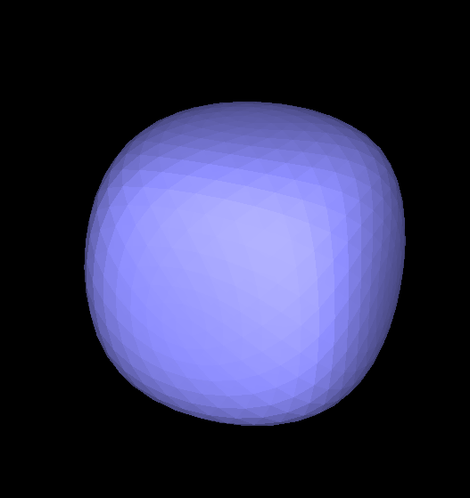 |